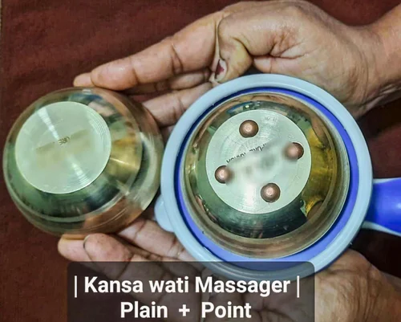
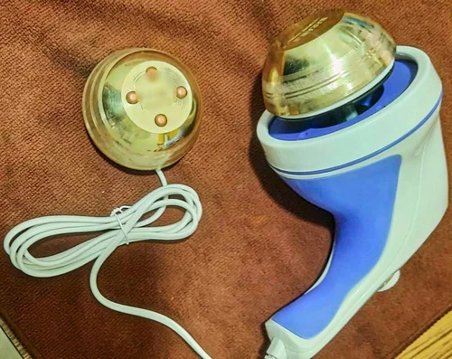
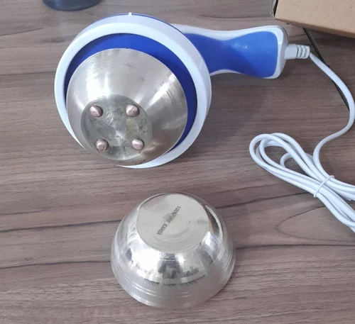

Foot Massager
Kansya 2 Wati Foot Massager
The Kansya 2 Vati Foot Massage Machine is a modern Ayurvedic wellness device that integrates traditional bronze vatki (small bowls) therapy with electric automation. Crafted in India, it typically includes two separate bronze bowls or plates designed for simultaneous foot treatments. Each vatki contains textured acupressure nodes and operates via an induction motor (around 90 W, ~30 RPM), offering forward and reverse motions. Users apply oil or ghee to their feet before placing them over the rotating bronze pieces, creating targeted pressure, warmth and energy-balancing effects. The machine promotes lymphatic drainage, improved circulation, stress relief and detoxification, while guiding traditional Ayurvedic benefits right into your home.
Enquire Now